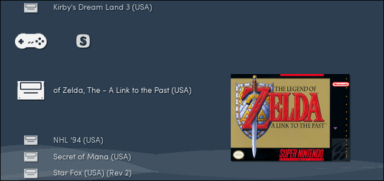

How-To Geek
Eight Advanced RetroArch Features that Make Retro Gaming Great Again

RetroArch is the ultimate all-in-one emulator, compatible with every system you can imagine. From classic Nintendo consoles to arcade boxes and even the Playstation or Wii, RetroArch brings massive gaming collections under one roof.
![]()
But it does so much more than just run games. It can make playing games even better, with cheats and filters and even real-time rewinding. We outlined how to get started with RetroArch, but that article just barely got you set up and started. It didn’t get into some of the advanced features, which do some amazing things.
Here are just a few of those features, and how to configure them.
Rewind Gameplay, Braid-Style
Old school games can be unforgiving. It’s part of their appeal, but if you want just a little bit of grace to offset the brutality, RetroArch offers a unique feature: real-time rewinding you can trigger with a single keystroke or button press.
If you’ve ever played the indie game Braid, you’ve got a good idea of how this works: hold a particular button, and watch as everything you just did reverses. It’s exactly as cool as it sounds, and even the music and sound effects play in reverse.
To try this out for yourself, head to the Settings panel in Retroarch, then to “Rewind”. From here you can toggle the “Rewind” option:

Then head to “Input”, followed by “Input Hotkey Binds”. Here you will see the keyboard shortcut for rewinding is “r”, but you can also set a joystick button for rewinding. Now fire up a game and start rewinding the action! We found this worked with some cores (like SNES), but didn’t work with others (like the indie game Cave Story). Your mileage may vary from core to core.
Map the RGUI Button to Access More Features
A lot of the best RetroArch features are hidden in a menu that’s kind of hard to access. To get to it, you need to configure an “RGUI button”. This brings up the RetroArch interface during gameplay, allowing you to use features like save state and shaders (which aren’t available in any other settings menu).
If you’re using an Xbox controller (highly recommended for RetroArch), the big Xbox button can trigger this GUI in Windows 10–as long as you disable the Windows 10 Game Bar from monopolizing things. To do this, open RetroArch, then press “Windows” and “B” to trigger the Windows game bar. This might not work in full screen mode.
Click the gear icon to open the settings, then make sure “Open game bar using Xbox button on a controller” is disabled.
With that unchecked, clicking the Xbox button will now bring up the RGUI during gameplay.
If you’re not using an Xbox controller, you can map the RGUI button yourself. In RetroArch, head to “Input”, then “Input Hotkey Binds”. Head to “Menu Toggle Gamepad Combo”.
Here you can choose a predefined combination of buttons to bring up the RGUI. It’s not as sleek as a single button press, but it gets the job done and is unlikely to be triggered accidentally. (We’ll talk more about what this RGUI menu can do throughout this article.)
Save and Load Your State in Any Game
Some older games don’t offer saving, which sucks when you want to go to bed or actually do your job for a little while. Happily RetroArch makes it easy to save and load states, which lets you carry on playing from precisely where you left off. To use this feature, launch the RGUI during gameplay. You’ll see the option to save and load your state.
If you’d like to have a few different saves on the go, you can change the current save slot as well.
Configure Your Gamepad Differently for Each System
When you configure your gamepad, those key binds apply to every core on your system. But that means some configurations may not “feel” right. If you want different controls for each core, there’s a way to do that buried in the RGUI.
Launch a game with the core you want to configure, then pull up the RGUI, scroll down, and select “Controls”.
This might be a touch confusing. Instead of configuring which key or button your devices trigger which buttons in the emulator, you’re configuring which buttons on the virtual RetroPad, which you configured earlier, correspond to buttons within the emulator. This may seem convoluted, but the process makes it easy to switch from the keyboard to a joystick, or from one joystick to another, without messing up your custom per-core settings.
Control Nintendo DS Games Entirely with Your Gamepad
On a related note, you might think there’s no way to play Nintendo DS games without a touch screen, or at the very least plugging in a mouse. But you’re wrong! You can set one of the analog sticks on your game controller to control the bottom screen. Load any DS game, then trigger the RGUI. Head to “Options”, and you’ll see an option to enable a mouse pointer.
Below that option you can configure which analog stick controls this virtual stylus, and configure how it handles. Clicking is, by default, handled by the right-hand trigger, which the DS doesn’t otherwise use. With this enable, you can play DS games from the couch without a lot of problems, though it will obviously work better for some games than others.
Get That Authentic Retro Look with RetroArch’s Shaders
Retro games weren’t designed to look good on a flat HDTV screen. They were designed with CRT televisions and monitors in mind. If you don’t want to dig out one of those beasts, though, RetroArch allows you to somewhat simulate the experience. It’s called a shader, and it adds artifacts that make the experience of playing a retro game feel more authentic. For example, you can turn this:
Into this:
It’s hard to capture in a still image, but those virtual scan lines make everything feel a lot more fluid in motion. And setting this up is simple. While playing a game, hit the RGUI button, then click down to “Shaders”. Select “Load Shader Preset”, the browse until you find a shader you like.
There are dozens of shaders to try out here, some of which are pretty unstable unless you have a powerful graphics card. We recommend you browse the “shaders_cg” folder first, and only look at the “shaders_glsl” folder if you can’t get any of the “cg” shaders to work well. The shader above is “crt-hylian”, which we find to be a good balance between performance and beauty, but feel free to explore the collection until you find something you love.
Cheat Like the Cheater You Are
Are save states and real-time rewinding not enough to make up for your skills deficiency? Consider cheating! RetroArch offers built-in support for replicating the Game Genie of legend, which you might remember hearing about in grade school. Even better, you can download all of the cheats for your favorite systems in one quick go.
First, head to the “Online Updater” section of the RetroArch settings. Head to “Update Cheats”, and select the zip for for any system you’d like to cheat on. This will download all the cheats for all the games on that system. (Seriously.)
Now, launch any ROM, and trigger the RGUI. Head down to “Cheats”, then “Cheat File Load”, then browse until you find the game you’re playing.
Browse the collection, you filthy cheater, then toggle the ones you want to use. Be sure to also select “Apply Cheat Changes”.
You also may need to reset the game before the cheats will apply. Here is some evidence that cheating works:
I did not earn those mushrooms. I stole them. I have disgraced my ancestors.
Download Art Thumbnails for All of Your Games
Browsing a large ROM collection can be tricky if you have no visual reference. Happily, RetroArch offers a built-in thumbnail downloader. Head to “Online Updater”, then “Download Thumbnails”. You can select any system.
Thumbs will be downloaded automatically, and they look great.
By default, the titles screen from the game is shown. If you would prefer the box art, or a random screenshot, head to the “Interface” section of the settings. You’ll find the option to toggle “Thumbnails” there:
I prefer box art myself, but use whichever you like!
![]()
![]()
![]()
![]()
![]()
![]()
![]()
![]()
![]()
Good article Justin. I'm a big fan or RetroArch you should check out a program called LaunchBox/BigBox it is a frontend for emulation and modern gaming all in one it is an awesome program here is a video demo of BigBox https://www.launchbox-app.com/big-box in action for full disclosure the BigBox part of the application is a premium feature but LaunchBox is impressive for managing your game collection all on its own. The program is developed almost daily and the dev does live development on Twitch and takes suggestions and votes on what to add with the community. They also do video tutorials on YouTube and have a great forum with lots of helpful people who help with almost any issues.
I'm quite familar with LaunchBox! I used to have it set up, but it's not quite as easy to use on the couch as RetroArch is, plus you need to spend time setting up all of your different emulators. But I did like how I could launch my PC games in the same place as my retro ones!
Oh wait...they added some new features. I'm going to have to give this a second look, and possibly a write-up. Stay tuned, and thanks!
Its a very good compliment to RetroArch and you should see the way people are integrating it into Kodi for complete couch setup. I've seen users that use Kodi as their shell and BigBox from inside of Kodi so its totally couch friendly in that aspect. I would love to see a write up about the program thanks for covering something about retrogaming. Have you tried the new Mednafen Saturn core n RetroArch ts very early beta but it looks like it is the emulator that the Saturn has been waiting for.